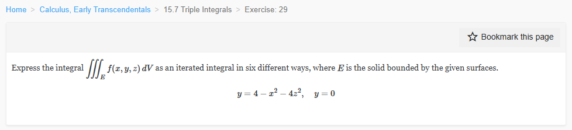

Please solve the problem in the following image.
(Image `20260928_141803_791455_utc_0800_0.png`. Alt text: Image: human_20260928_141803_791455_utc_0800)

20260928_141803_791455_utc_0800_0.png
End of problem
Answer
Let
$$
E=\{(x,y,z):0\le y\le 4-x^2-4z^2\}.
$$
The projection of \(E\) onto the \(xz\)-plane is the ellipse
$$
D=\{(x,z):x^2+4z^2\le 4\}
=\left\{(x,z):\frac{x^2}{4}+z^2\le 1\right\}.
$$
To obtain, for example, the \(dz\,dy\,dx\) order, fix \(x,y\). From \(0\le y\le 4-x^2-4z^2\),
$$
z^2\le \frac{4-x^2-y}{4}\quad\Longrightarrow\quad |z|\le \frac12\sqrt{4-x^2-y}.
$$
The condition \(4-x^2-y\ge 0\) supplies the \(y\)-limits, and \(0\le y\) forces \(x\in[-2,2]\). The other five orders follow by the same slicing procedure.
Using \(f\) as shorthand for \(f(x,y,z)\), the six iterated integrals are:
1. \(dx\,dy\,dz\)
$$
\int_{-1}^{1}\int_{0}^{4-4z^2}\int_{-\sqrt{4-4z^2-y}}^{\sqrt{4-4z^2-y}} f\,dx\,dy\,dz
$$
2. \(dx\,dz\,dy\)
$$
\int_{0}^{4}\int_{-\frac12\sqrt{4-y}}^{\frac12\sqrt{4-y}}\int_{-\sqrt{4-y-4z^2}}^{\sqrt{4-y-4z^2}} f\,dx\,dz\,dy
$$
3. \(dy\,dx\,dz\)
$$
\int_{-1}^{1}\int_{-2\sqrt{1-z^2}}^{2\sqrt{1-z^2}}\int_{0}^{4-x^2-4z^2} f\,dy\,dx\,dz
$$
4. \(dy\,dz\,dx\)
$$
\int_{-2}^{2}\int_{-\sqrt{1-x^2/4}}^{\sqrt{1-x^2/4}}\int_{0}^{4-x^2-4z^2} f\,dy\,dz\,dx
$$
5. \(dz\,dx\,dy\)
$$
\int_{0}^{4}\int_{-\sqrt{4-y}}^{\sqrt{4-y}}\int_{-\frac12\sqrt{4-y-x^2}}^{\frac12\sqrt{4-y-x^2}} f\,dz\,dx\,dy
$$
6. \(dz\,dy\,dx\)
$$
\int_{-2}^{2}\int_{0}^{4-x^2}\int_{-\frac12\sqrt{4-x^2-y}}^{\frac12\sqrt{4-x^2-y}} f\,dz\,dy\,dx
$$
**Consistency check.** With \(f=1\), every integral must equal the volume
$$
\iint_D (4-x^2-4z^2)\,dA=4\pi,
$$
which indeed matches the limits above.
$$
\boxed{
\begin{aligned}
&\int_{-1}^{1}\int_{0}^{4-4z^2}\int_{-\sqrt{4-4z^2-y}}^{\sqrt{4-4z^2-y}} f\,dx\,dy\,dz,\\
&\int_{0}^{4}\int_{-\frac12\sqrt{4-y}}^{\frac12\sqrt{4-y}}\int_{-\sqrt{4-y-4z^2}}^{\sqrt{4-y-4z^2}} f\,dx\,dz\,dy,\\
&\int_{-1}^{1}\int_{-2\sqrt{1-z^2}}^{2\sqrt{1-z^2}}\int_{0}^{4-x^2-4z^2} f\,dy\,dx\,dz,\\
&\int_{-2}^{2}\int_{-\sqrt{1-x^2/4}}^{\sqrt{1-x^2/4}}\int_{0}^{4-x^2-4z^2} f\,dy\,dz\,dx,\\
&\int_{0}^{4}\int_{-\sqrt{4-y}}^{\sqrt{4-y}}\int_{-\frac12\sqrt{4-y-x^2}}^{\frac12\sqrt{4-y-x^2}} f\,dz\,dx\,dy,\\
&\int_{-2}^{2}\int_{0}^{4-x^2}\int_{-\frac12\sqrt{4-x^2-y}}^{\frac12\sqrt{4-x^2-y}} f\,dz\,dy\,dx.
\end{aligned}
}
$$
---
No graphical results.